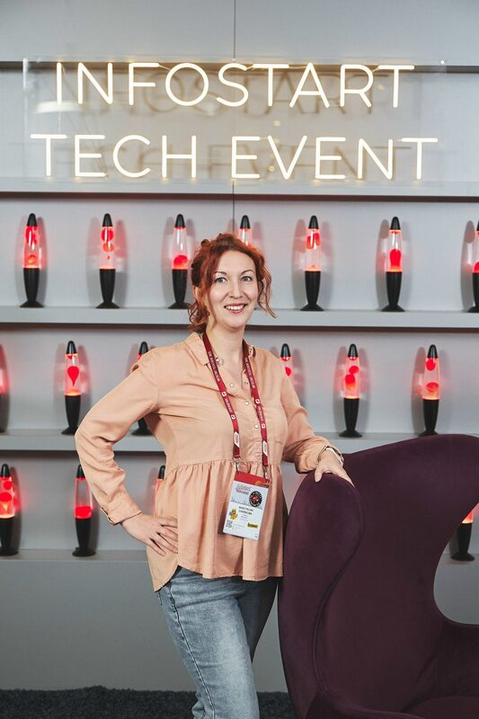

программист 1С · ментор · автор канала
Анастасия Синякова
В сфере 1С с 2008 года. Веду канал «Заметки 1Сницы», готовлю джунов к реальной работе на проектах и делюсь тем, что помогает расти без лишнего шума.

// Обо мне
Не резюме — путь
Разработчик 1С и архитектор. Автор курсов для 1Сников: готовлю джунов к реальной работе на проектах.
В сфере 1С с 2008 года. Работала на проектах программистом, архитектором и тимлидом — во франчайзи и в штате. Сертифицированный специалист 1С.
Была техническим директором во франчайзи: собрала команду с нуля, где люди приходили без опыта и росли внутри. С 2012 года наставничаю младших коллег — и поняла, что обучение даёт больше всего отдачи.
Веду канал «Заметки 1Сницы» — о мире 1С, обучении и всём, что вокруг.
- С 2008 проекты, архитектура, тимлидство
- Наставничество с 2012 — рост джунов на практике
- Курсы практикум и инструменты для аналитиков
// Ссылки
Куда заглянуть
Канал и обучение
// Видео